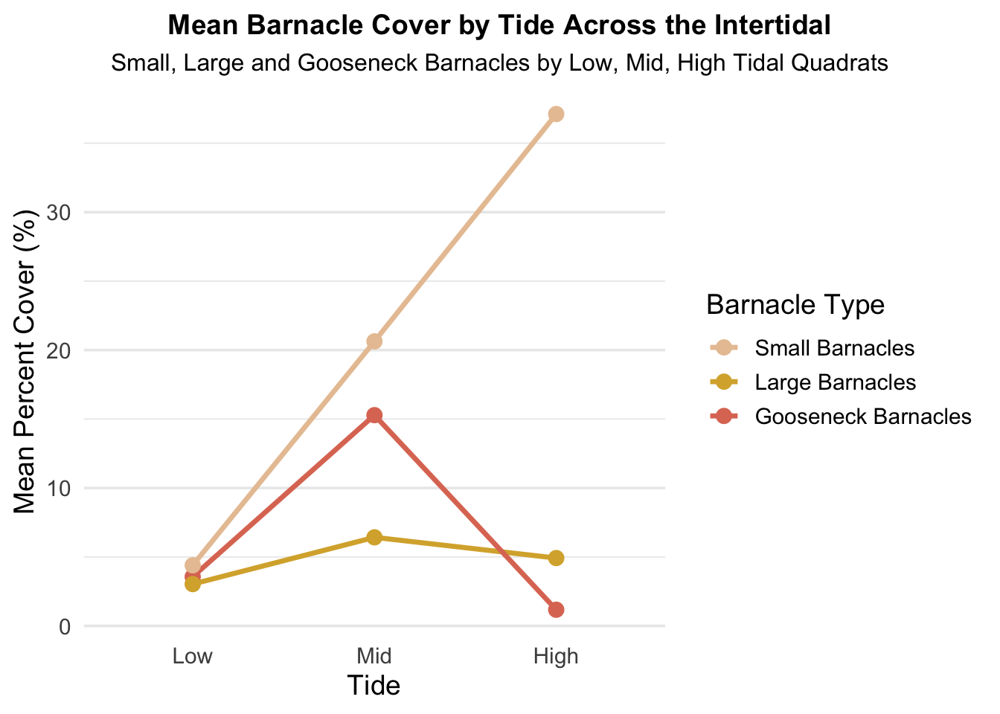

library(tidyverse)
library(here)
library(ghibli)
library(tidyr)
library(janitor)
library(forcats)
library(stringr)Week 09 Homework
Introduction
Homework
Working with intertidal data. Today you will need to use skills that you have learned in working with words to clean up some issues with the character data and use what you learned today to reorder your factors into orders that make sense. (Also the column headers could be better…). HINT: New package idea to fix this is using the janitor package.
Your goal, as per usual, is to make a plot, any plot where one of the axes is a factor. Save everything in the appropriate folders.
You have two possible files to play with in the data folder (you don’t HAVE to use both): intertidal.csv and intertidal_latitude.csv (as well as a data dictionary)
Importantly, if you decide to visualize anything by tide height it should go from low to mid to high tide on the plot and if you decide to visualize by site it should go in order of latitude (e.g. south to north or north to south).
Homework due date due on Tuesday [not Friday].
Load Libraries
Read Data
intertidal_data<-read_csv(here("Week_09","Data","intertidaldata.csv")) # intertidal dataglimpse(intertidal_data)Rows: 450
Columns: 13
$ Site <chr> "Scripps", "Scripps", "Scripps", "Scripps", "Scr…
$ Transect <dbl> 1, 1, 1, 2, 2, 2, 3, 3, 3, 4, 4, 4, 5, 5, 5, 6, …
$ Quadrat <chr> "Low .", "Mid", "High", "Low", "Mid", "High", "…
$ `Bare Rock` <dbl> 25, 50, 20, 10, 40, 40, 0, 30, 60, 0, 45, 70, 5,…
$ Algae <dbl> 75, 0, 50, 85, 5, 5, 100, 5, 4, 100, 10, 0, 70, …
$ Mussels <dbl> 0, 5, 1, 0, 10, 0, 0, 10, 1, 0, 3, 0, 0, 5, 0, 0…
$ `Small Barnacles` <dbl> 2, 50, 50, 0, 40, 55, 0, 40, 20, 0, 25, 25, 20, …
$ `Large Barnacles` <dbl> 5, 5, 0, 0, 1, 0, 1, 0, 0, 0, 15, 5, 5, 0, 0, 5,…
$ `Gooseneck Barnacles` <dbl> 0, 0, 0, 5, 5, 0, 0, 30, 5, 0, 0, 0, 0, 0, 0, 0,…
$ Anemone <dbl> 3, 0, 0, 0, 0, 0, 0, 0, 0, 0, 5, 0, 0, 10, 0, 0,…
$ `Whelks (Counts)` <dbl> 0, 0, 0, 0, 0, 0, 0, 0, 1, 0, 0, 0, 0, 1, 0, 0, …
$ `Crabs (Counts)` <dbl> 0, 0, 0, 0, 0, 0, 0, 0, 0, 0, 0, 0, 0, 0, 0, 0, …
$ `Stars (Counts)` <dbl> 0, 0, 0, 0, 0, 0, 0, 0, 0, 0, 0, 0, 0, 0, 0, 0, …Clean the Data
Using janitor package, clean the variable names.
intertidal_clean<-intertidal_data %>%
clean_names()glimpse(intertidal_clean)Rows: 450
Columns: 13
$ site <chr> "Scripps", "Scripps", "Scripps", "Scripps", "Scrip…
$ transect <dbl> 1, 1, 1, 2, 2, 2, 3, 3, 3, 4, 4, 4, 5, 5, 5, 6, 6,…
$ quadrat <chr> "Low .", "Mid", "High", "Low", "Mid", "High", "Lo…
$ bare_rock <dbl> 25, 50, 20, 10, 40, 40, 0, 30, 60, 0, 45, 70, 5, 3…
$ algae <dbl> 75, 0, 50, 85, 5, 5, 100, 5, 4, 100, 10, 0, 70, 0,…
$ mussels <dbl> 0, 5, 1, 0, 10, 0, 0, 10, 1, 0, 3, 0, 0, 5, 0, 0, …
$ small_barnacles <dbl> 2, 50, 50, 0, 40, 55, 0, 40, 20, 0, 25, 25, 20, 60…
$ large_barnacles <dbl> 5, 5, 0, 0, 1, 0, 1, 0, 0, 0, 15, 5, 5, 0, 0, 5, 0…
$ gooseneck_barnacles <dbl> 0, 0, 0, 5, 5, 0, 0, 30, 5, 0, 0, 0, 0, 0, 0, 0, 0…
$ anemone <dbl> 3, 0, 0, 0, 0, 0, 0, 0, 0, 0, 5, 0, 0, 10, 0, 0, 1…
$ whelks_counts <dbl> 0, 0, 0, 0, 0, 0, 0, 0, 1, 0, 0, 0, 0, 1, 0, 0, 0,…
$ crabs_counts <dbl> 0, 0, 0, 0, 0, 0, 0, 0, 0, 0, 0, 0, 0, 0, 0, 0, 0,…
$ stars_counts <dbl> 0, 0, 0, 0, 0, 0, 0, 0, 0, 0, 0, 0, 0, 0, 0, 0, 0,…Much better.
intertidal<-intertidal_clean %>%
rename(tide = quadrat) %>% # rename quadrat column to tide
mutate(tide = str_trim(tide), # trim spaces from data
tide = factor(tide, levels = c("Low", "Mid", "High"))) %>% # make tide a factor
filter(!is.na(tide)) %>% # remove the NAs
droplevels() %>% # drop extra levels
select(tide, small_barnacles, large_barnacles, gooseneck_barnacles) %>% # gather the 3 barnacle columns into one column
pivot_longer(cols = c(small_barnacles, large_barnacles, gooseneck_barnacles), # pivot the data longer into barnacle type and percent cover
names_to = "barnacle_type",
values_to = "cover_pct") %>%
group_by(tide, barnacle_type) %>% # group by tide and barnacle type
summarise(mean_cover = mean(cover_pct, na.rm = TRUE), .groups = "drop") %>% # mean barnacle percent cover in each quadrat
mutate(barnacle_type = recode(barnacle_type, # rename the columns
small_barnacles = "Small Barnacles",
large_barnacles = "Large Barnacles",
gooseneck_barnacles = "Gooseneck Barnacles"),
barnacle_type = fct_reorder(barnacle_type, mean_cover, .desc = TRUE)) # reorder barnacle types from small, large, to gooseneck across all tidesMake a Plot
intertidal_plot<-ggplot(intertidal,
aes(x = tide, y = mean_cover,
group = barnacle_type, # each barnacle type on its own line
color = barnacle_type)) + # each type has its own color
geom_line(linewidth = 1.2) + # make a line plot
geom_point(size = 3) +
labs(x = "Tide",
y = "Mean Percent Cover (%)",
color = "Barnacle Type",
title = "Mean Barnacle Cover by Tide Across the Intertidal",
subtitle = "Small, Large and Gooseneck Barnacles by Low, Mid, High Tidal Quadrats") +
scale_color_ghibli_d("PonyoMedium", direction = -1) + # nice colors
theme_minimal(base_size = 14) +
theme(panel.grid.major.x = element_blank(),
plot.title = element_text(face = "bold", size = 14, hjust = 0.5),
plot.subtitle = element_text(size = 12, hjust = 0.5),
plot.title.position = "plot")
intertidal_plot

Figure 1 shows the mean percent cover of each type of barnacle for low, mid, and high tide heights. Data was measured using quadrats at each tide level.
Extra
# ggsave(here("Week_09","Output","intertidalplot_HW9.png"))
# Empty your environment before you start working
# Restart R
# .rs.restartR()
# remove whole list in enviroment
# rm(list = ls())